来源：https://m2fji8xdvc.feishu.cn/docx/Lzf4dNXZwoh90gx6fmDcGyoTnxd
大家晚上好，我是辰风。
公众号爆文这个项目也做了有一年多时间了，最近通过公众号放大了一下，单号单日收益有600+左右。这个成绩和很多大佬相比算不了什么，不过对于我们来说，也是一笔不菲的收益。
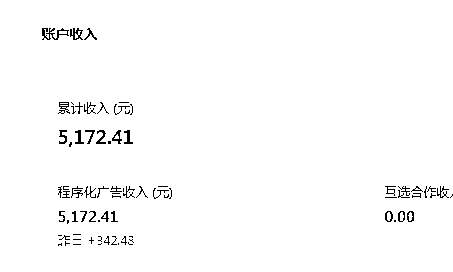
第一次知道这个项目是在生财的一条风向标里，在这个风向标里，当时提到了一个近现代史的账号，叫飞扬说史。
因为公众号爆文的项目和我自身比较匹配，我做过6万粉的公众号，也在公众号领域深耕了三年多时间，写了六百多篇原创。之前的精华帖：https://t.zsxq.com/19yzmEAU8（公众号站内外引流全流程)
AI使用也并不算太难，所以我就直接入手去做的这个项目，从零到一跑通大概也就一周左右的时间，我放了两篇文章，在公众号里后之后就没有去管它，在隔了一周之后,发现这两篇文章跑到了50,000的阅读量。
这时候我意识到公众号爆文一定是一个风口项目，我立马开始组织学员带团队一起入场做这个赛道，当时一共是做了五个现代史账号，是使用ai做框架和出稿。
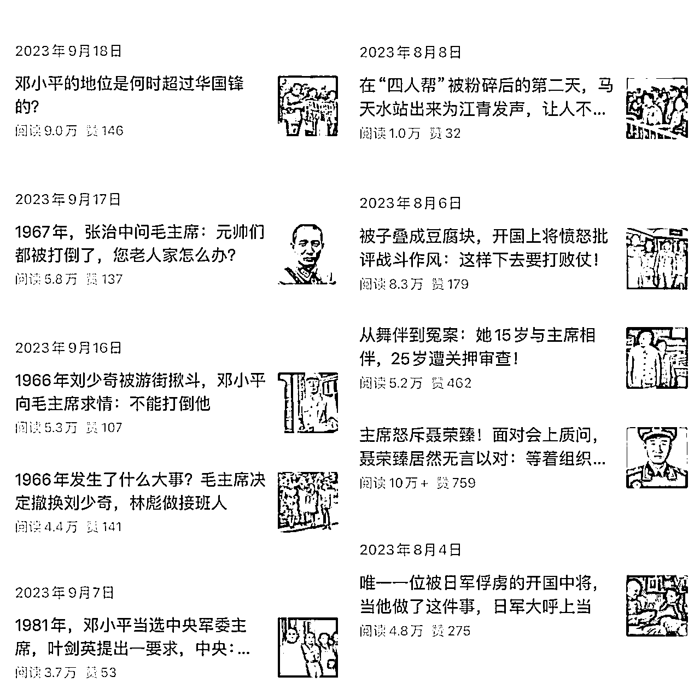
因为当时使用AI的人还不算太多，很多工作室还没有入场，所以也算是吃到了一定的红利。
我用AI大概也创作了百来篇文章，一开始的时候进流量池很快，平均阅读量能够跑到万阅读，甚至是10万加，但是ecpm单价收益偏低，于是做了大概有一两个月之后的时间后，发现阅读没有上升了，就到了几千左右。
我意识到好像是因为账号的问题，于是在账号上面做调整，直到后面才意识到，原来并不是账号，是平台开始打击ai。
因为原有的近现代史账号跑不通了，又没有找到很合适的赛道，所以在这个过程当中停了一段时间。
直到今年三月份左右，又发现了一个比较契合自己的赛道，就是做职场领域的定位，然后开始跑爆文做职场政策的信息解读，跑了十多篇10万加之后，又找到了热点赛道，做出了多篇20万加的爆款，很多文章也突破了万阅读。
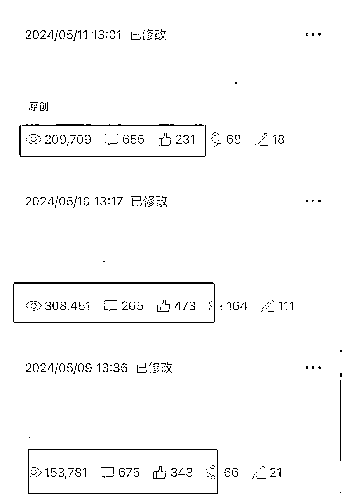
（数据没更新，更新后确实是20w+，懒得截了）
信息差是来于生财，所以我想通过这篇复盘能够回馈生财，记录一些我做号的思路，能够给到大家一些启发。
开了账号之后，先把基础设置完善一下，比如头像，名字，还有关注后回复这些，不要一上来就写文章。
账号名字一般用昵称+定位
前几天可以随意写点内容，看看数据反馈，过几天再开始进行垂类内容输出。
坚持发个10多天的样子，会看到推荐流量，会有起色。可以先把号注册发几篇内容，丢在一旁几天，再开流量主，发文。（这个办法屡试不爽）
如何判断是推荐流量：
点击单篇文章，查看数据来源，有推荐（搜一搜），这就代表进池了。因为你没有基础用户，只要阅读量有几百上千就肯定是进池了。
没起来的原因：原创度过低（抄袭严重，ai严重）；账号有问题；老号不行。
随便引引流，比如做问一问，找亲人关注，大号给小号抽奖引流。（主要目的：来点外部流量）
抽奖引流就是：做现金红包，或者实体抽奖，让大家去后台回复关键词，参与抽奖。从而实现被动引流效果。
没有基础用户，要转发社群或者朋友圈。
开奖时间可以在活动后三四天，设定晚上12.00。
然后随便写一两篇文章，看看效果。先不那么垂直。然后再开始发垂直领域的内容。
如果一个领域写着没啥动静，可以停一段时间，改写其他领域。
例：一个电视剧没啥动静，就换一个电视剧，实在不行就换定位。
比如体制内，换剧评，剧评换历史，什么有流量写什么。
我对标了大量的账号和赛道，也发现了很多不错的定位。
主要是两类，一类是话题性的，一类是身份标签。
围绕话题性的，譬如明星，娱乐热点，房地产，失业，负债，地理，历史，公文写作。
围绕身份类的，比如悔恨的赌徒，全职宝妈，二本大学生，专升本，一人企业，创业者。
越是能够切入细分类的人群或是细分类的话题赛道，这样的账号往往阅读量奇高。
以下内容是我做的职场号的一个分类，可以参考：
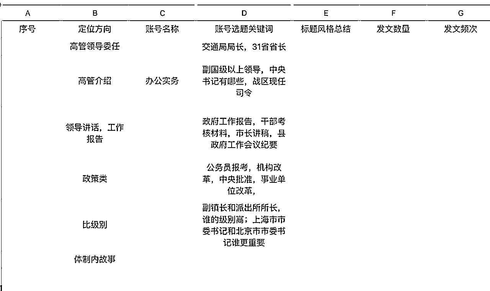
要想提升原创度，第一个方式是你自己看完这篇文章，把它的整个故事进行概括一下，再用自己的方式把它说出来。
其二，提高内容原创度，最好的方式就是讲故事。
找你比较熟悉的话题，然后开始讲故事。
针对一些比较常见的话题，比如国家大背景，大趋势这样的内容，我们可以直接调换的，因为它不会影响我们整个文章的内容。
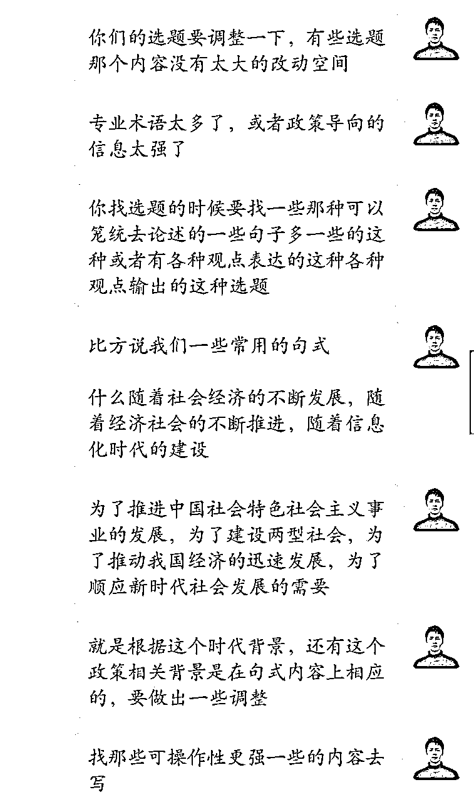
只要是跟你的这个政策或者跟你的这个主题挂点钩的，我们可以直接搬运其他的背景。
选题非常关键，对标非常关键。
对标账号一直要保持更新的状态，我会在同时段关注10个左右垂直定位的账号。
这些账号掉流量了，不会立马取关，依然会关注几天，重点看跑出爆款的账号。（万以上和十万以上的）
低粉爆款的账号对标的人很多，写了很多篇原创的账号和大号同样值得学习。
公众号爆文核心，我认为就是我开头说的，选题为王，内容为王。
为什么很多人账号不行了，因为开了很多矩阵，没办法深挖内容，只能批量出文，平台对于AI号打击很严重。
我之前起了也有4.5个号，因为用了chat，AI味重，后面全部废掉了。
越靠近人性的，容易引发争议性话题，越容易爆款。
内容上一定要有观点持方，无论是正方还是方法，总之就是不能中立。
你会发现一个很有意思的事情，不管你是立场，都会有人替你说话，当然，骂你的人更多。
但是不重要，他们都会变成流量，变成收益。
一个公式：写前要多看，看大佬号看选题；列好框架想思路；准备论据和内容；语音开搞手写微调。
1.写之前先要看几篇你要做的这篇选题的内容，消化吸收。（转发到群里，设置悬浮栏，可以快速跳转）
2.你要记住这篇文章的内容论述的是什么东西。
3.如果记不住，那你就拿张纸写下他的标题和他的框架内容。
他写了哪几个分论点每个分论点论证了什么故事。
4.产出完整文本
然后你看着你的框架开始进行尝试，试着根据你的框架内容生成一篇完整的内容的文章，这个过程当中不要有卡壳，说口头禅，比如阿，呀，嗯这种词汇。
语音转写需要刻意练习一段时间，十分钟写一篇文，原创度还高，是可以实现的。
AI工具推荐：文心一言，Kimi
我们主要借助ai工具来实现一个降本增效的效果，主要用途是两个方向。
第1个是用ai工具提取文章内容的框架。让ai看完这篇内容，然后给我们进行总结，然后我们拿着这个框架去进行内容输出。
第2个是把ai当成打工的，让他们给我们去做一些内容加工，比如说对文本进行润色，添加标点符号，调整文章句式结构等等。
因为我不用ai做内容，但是可以用它辅助一下，这个还是没问题的，前提是不改变我的文章主体内容。帮忙归纳总结，快速凝练重点和核心观点。
1.文章字数要达标，其次多分段。
三到四句话分一段，段与段之间空行。这时，有600字左右，可以插入一个广告位，有900字以上，有两个广告位。
（如何凑字数：多放一些原文链接进去）
2.配图的要求
一般配图与否影响不大，涉及政策，薪资内容可以加入配图，增加内容吸引力，引导读者读下去
3.排版
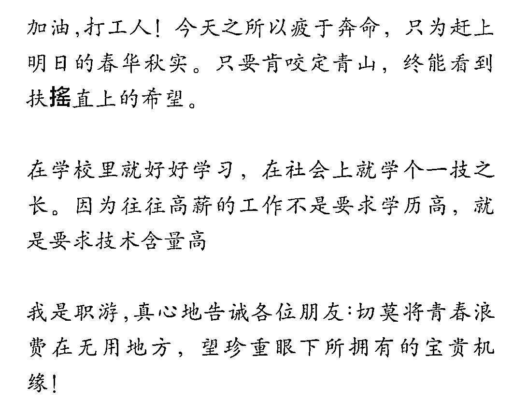
使用序号，段落标记重点（加粗，换色），引导词（点赞在看等），这些都是提升完读率的关键，让读者至少能把金句看完。
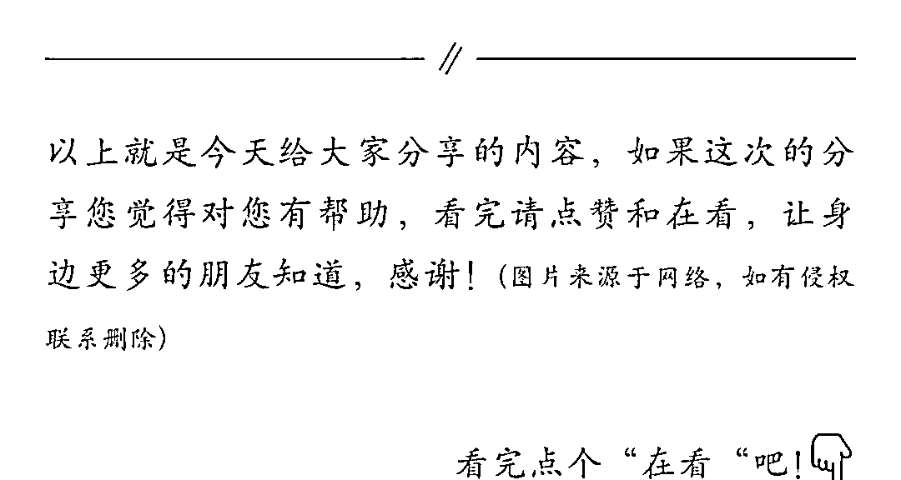
4.跟定位相关，其次是内容
不同的定位收益不一样，ecpm不一样，一般老年人的比较高，其他的我没关注。
内容要逻辑清楚一点，故事有悬念的那种完读率肯定也会高的，因为大家对于八卦猎奇的，故事的天然的就感兴趣。
所以，政策内容也可以讲故事去写，这样的账号是比较难模仿的。
注意：不要引导点广告，会违规
第一，先做用户留存，做公众号新关注，微信导流。
可以直接贴你的微信码，设置一个引导文案。（我是xx，做什么的，账号解决什么问题）
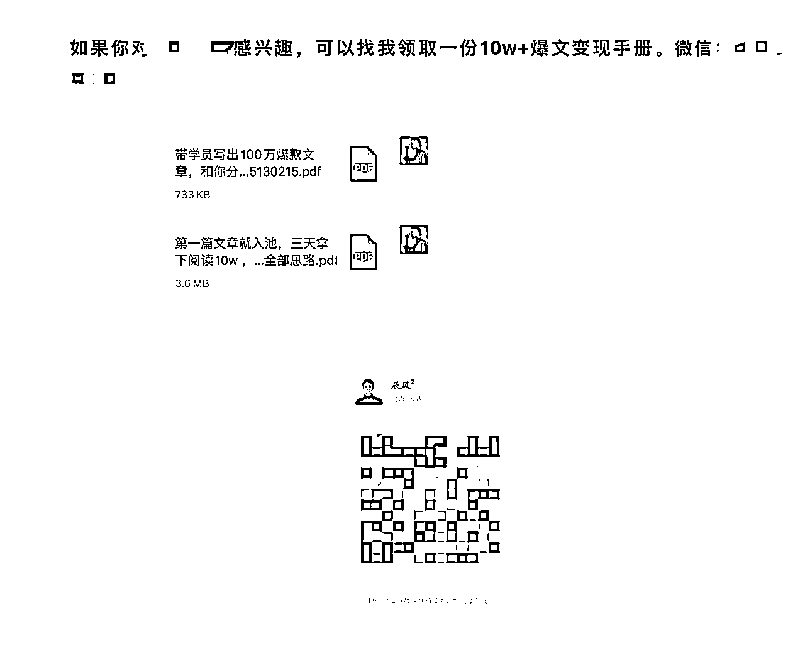
第二，可以做知识付费，卖你的社群产品，就像下面这样。
更细节的话可以放课程内容，社群分享内容，打款截图等等。
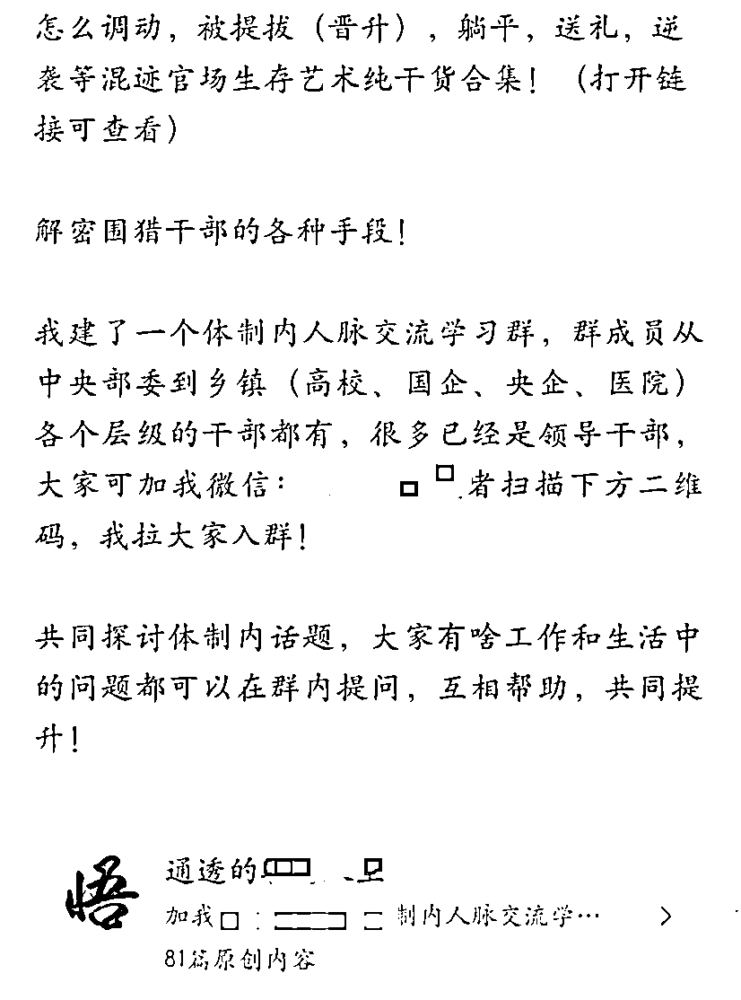
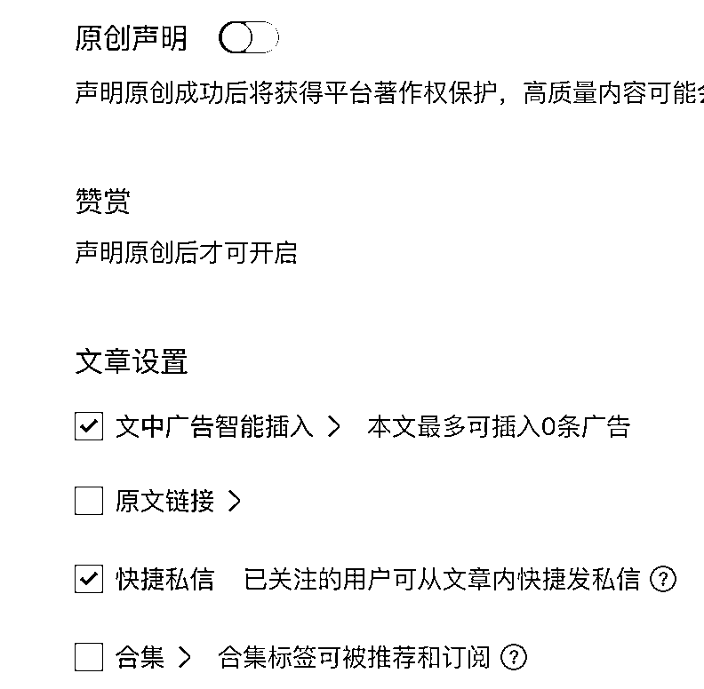
原创声明一定要记得开，开通同一作者三次原创之后，可以开通赞赏账户。
进入公众号，开通，邀约给微信，然后微信进入赞赏小程序，即可完成设置。（一般不用开）
发文前，检查广告智能插入是否设置正确，可以插入几条（一般900字以上，可以插入两个）
有的时候没有广告，或者看不到，正常现象（没有匹配到合适的，或者没有推送出来），看收益数据就行
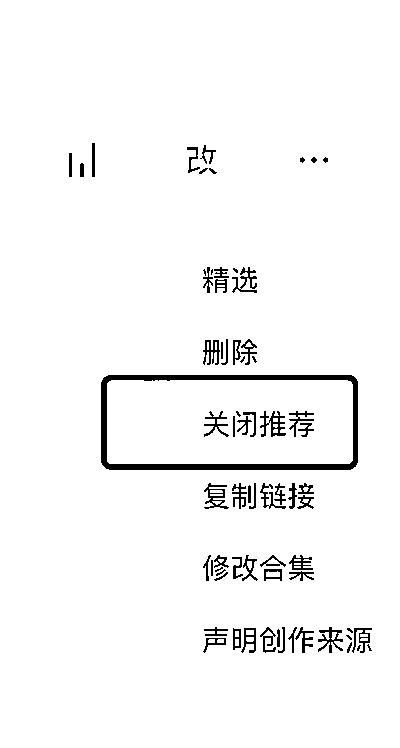
精选，就是置顶你的这篇文章。
关闭推荐，不要随便点，这个关闭推荐，关了就没了，不能再开启。
创作来源，可以看情况声明，如实填写即可，目前来看，影响不大。
帐号被踢出流量池是很正常的，如果你之前已经爆流了，是10w+阅读，然后账号已经被提出流量池。
解决方案是三个：
1.继续创作内容，等重新回到流量池
2.停更一段时间之后，再重新继续创作
3.帐号已经没有什么流量了，只有零星几个阅读，直接注销重开
4.写小绿书去激活
底层逻辑：很简单，在你没有用ai，能够保证内容原创度和选题质量的前提下，那你就只是被腾讯阶段性放弃了，踢出了流量池。所以就按照我刚刚说的这几个解决方案去做就好了。
多准备几个账号一起写内容,这个账号不爆，另一个账号去爆，这样就没有太大压力。
取标题很简单，就是别人用的哪个，或者套用他的句式。
你可以直接复制过来，然后复制了之后用它在搜一搜，去搜索更多的文章，看别人是怎么取的。
然后从中去挑选你觉得还算不错的关键词布局的比较多的，比较有吸引力的标题，这样的步骤多重复几次，你就大概知道哪样的标题会比较吃香了。
1.找好对标，做垂类的定位。
2.标题优化，对标爆款标题关键词，内容增量都不能少。
3.内容原创度一定要保证，确保你的原创能达标，不要用ai。
4.保持日更，争取每天都能发一个内容，建议发文时段7点。
如果有一个号已经进池，没进池的账号，可以把名片挂到已经进池的大号文章里。
现在就是这样，坚持写，多开几个账号，保持原创，不要质疑，干就完了。
持续写，进池了就多发几篇，没进池就只写一篇，内容差点也影响不大。
第一，是为了测多重定位。
一个内容，一个定位可能如果做的人多了，这个赛道就会内卷，一旦内卷，整个账号的阅读量就会下滑，你找的选题好，有可能别人写的比你快，你的原创度就下来了。
大盘竞争流量很多，这样你分的流量就比较少，其次你的收益会下降，所以一个定位它做不长久，我们是需要及时进行调整的，看哪个赛道的选题容易跑出爆款，我们就做哪个赛道。
用多账号来对抗进池的不稳定性，一个账号要进流量池，并且在流量池保持稳定是有一定难度的。
如果我们能够多开一些帐号，这个就可以极大减轻我们的压力，建议在早期先做清楚一个垂类定位，然后开其他账号也做这个定位，如果你已经把握到了流量规律，那你可以每一个账号做一个定位，但是前提是保证你的收益，如果收益不行就马上砍掉中指，做好一个账号。
最后，谢谢你的观看，让我们一起生财有术。
何以解忧，唯有生财。